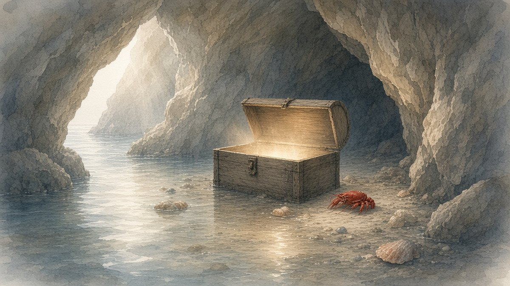

Lobsymiddelbare school
Lobsymiddelbare schoolH4 · P6S-TBU
Lobsymiddelbare school
Wat doe je graag?
Het koraalrif is klaar. Je hebt 25 vragen beantwoord en er is al een plaat van Lobsy's schild af. In de schatgrot gaat het over wat je graag doet en wat je later wilt leren.
 koraalrif
koraalrif schatgrot
schatgrot Pauze-eiland
Pauze-eiland vuurtoren
vuurtoren laguneHet koraalrifKlaarDe schatgrotNuPauze-eilandNa vraag 50De vuurtorenDeel 2De laguneLaatste wereld
laguneHet koraalrifKlaarDe schatgrotNuPauze-eilandNa vraag 50De vuurtorenDeel 2De laguneLaatste wereld